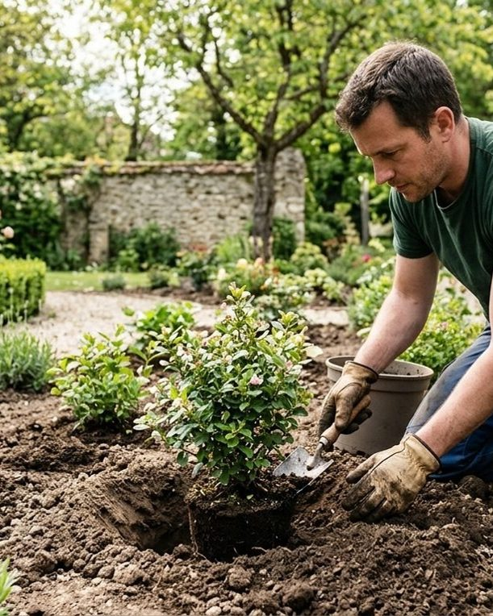
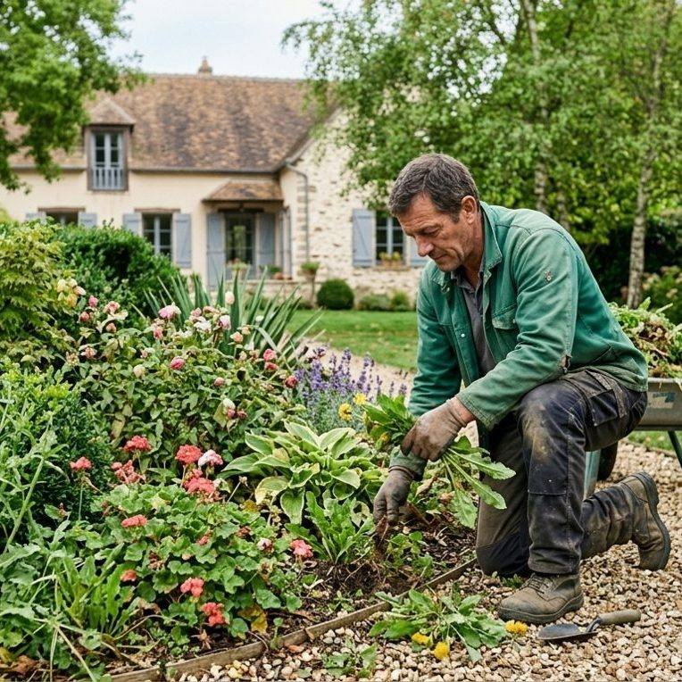
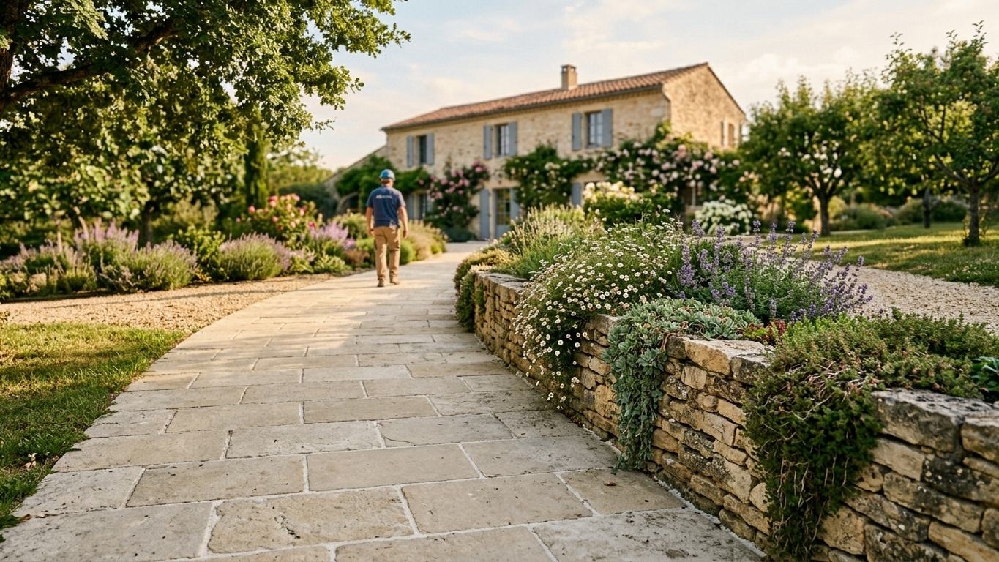

Jeremy Jardinier Paysagiste · Le Mérévillois (91)
Votre jardin, bien pensé et bien entretenu
Conception, création et entretien de jardins au Mérévillois (91) et dans les environs.
Demande de devis · Le Mérévillois (91)
Nos prestations
Du plan du jardin à son entretien
Quatre prestations pour créer, aménager et entretenir votre extérieur.
- 01Détails →
Conception de jardin
Étude du terrain et plan d'aménagement selon vos usages.
- 02Détails →
Création d'espaces verts
Massifs, plantations et pelouse adaptés à votre terrain.
- 03Détails →
Terrasses, allées et maçonnerie
Ouvrages en bois, dalles ou pierre pour structurer le jardin.
- 04Détails →
Entretien du jardin
Tonte, taille de haies et soin des massifs.
À propos
Un paysagiste au Mérévillois
L'entreprise, dirigée par Jeremy Laumonier, est installée au Mérévillois, dans l'Essonne.
Pour un projet de création, d'aménagement ou d'entretien, appelez le 06 13 18 34 82.



Contact
Un projet de jardin ? Parlons-en.
Décrivez-nous votre projet : nous vous répondrons pour en discuter.